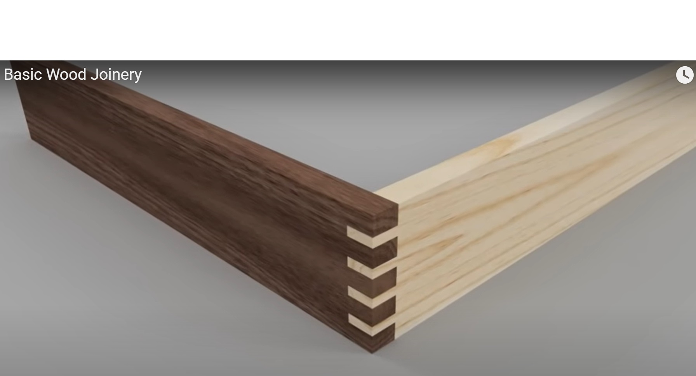
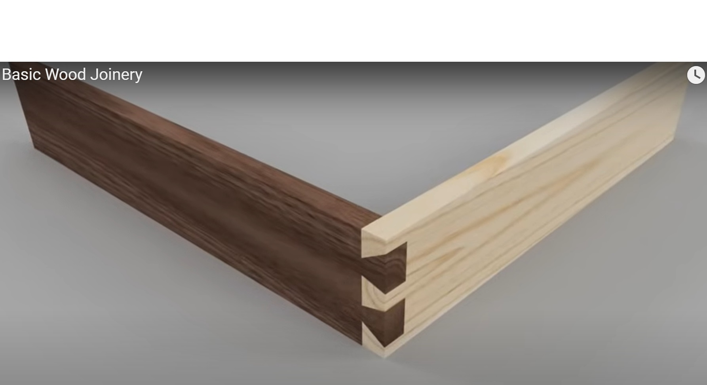

Your work
Student details
Your entries save automatically in this browser. Use Print / Save PDF before leaving the page.
Weeks 5-6
This module
Compare box-pin and dovetail joints, recognise quality criteria and practise the approved joint before project stock is cut.
Theory 1
Understanding box-pin joints for Carry-All corners
A box-pin joint connects two Carry-All corner components through a series of alternating rectangular pins and spaces. The pins on one piece fit into the spaces on the other, creating an interlocking corner rather than a simple edge-to-edge connection. When accurately made, the joint helps hold the sides in alignment and provides a larger gluing area than a plain butt joint. Its repeated pattern can also become a visible sign of careful workmanship in the finished Carry-All.
The strength of the joint depends partly on the amount of sound timber surface available for adhesive. The sides of the pins provide useful long-grain gluing area, where adhesive can bond more effectively than it does on end grain alone. However, a strong joint is not created by adhesive by itself. The pins must be sound, evenly formed and correctly matched so that the two components meet in the intended position without excessive gaps or damage.
Accurate layout is essential because each pin and space affects the next one. Reference faces and edges must be identified consistently, and matching components must be checked together before material is removed. A small marking error can continue across the full joint and cause the corner edges to misalign. Students must follow the supplied drawing, teacher directions and approved local process rather than estimating the pin pattern or copying an apparent size from the drawing.
- Confirm which faces and edges form the outside of the Carry-All.
- Check that the alternating pins and spaces correspond on both components.
- Preserve layout lines until the fit has been inspected.
- Test the joint during dry assembly before adhesive is applied.
- Seek teacher guidance before correcting a tight, damaged or inaccurate joint.
A correct dry fit should bring the components together in the required orientation while keeping the corner aligned. The fit should be controlled: excessive looseness can create visible gaps and weak alignment, while excessive tightness can crush fibres, split pins or prevent full assembly. Students should never force a joint together. If it does not fit as expected, stop, identify where contact is occurring and follow the teacher-approved correction process.
Common faults include uneven pins, damaged corners, gaps, proud or recessed ends, mismatched orientation and components that do not meet squarely. These faults may come from inaccurate layout, inconsistent reference surfaces, removing material on the wrong side of a line or failing to check the joint progressively. Folio evidence should show more than the completed corner. A clear dry-assembly photograph and caption can explain the fit, alignment check, fault found and approved correction made before adhesive and clamping.

Theory 2
Understanding dovetail joints for Carry-All corners
A dovetail joint connects two Carry-All corner components using matching tails and pins. The tails have sloping sides and fit into corresponding spaces between the pins. When the joint is assembled correctly, this interlocking shape helps prevent the corner from pulling apart in one direction. It also creates useful gluing surfaces and can produce a strong, neat corner when the parts are accurately marked, formed and fitted.
The direction of the joint matters. Tails and pins are not interchangeable shapes, and each component must be oriented correctly so the finished Carry-All matches the working drawing. Reference faces, reference edges and outside surfaces should be identified before layout begins. Students must follow the teacher-approved joint arrangement rather than estimating the number, spacing or angle of the dovetails from the apparent size of the drawing.
Accurate transfer is one of the most important stages. Usually, one completed joint component is used to transfer the matching shape onto the second component. The parts must be held in their correct relationship, with edges aligned and movement prevented, so the transferred lines represent the actual joint rather than a separate measurement. Thick, unclear or misplaced lines can produce gaps or prevent full assembly. Teacher directions control the approved marking and construction process.
- Identify the tails, pins, outside faces and matching corner components.
- Keep reference edges aligned while transferring the joint shape.
- Clearly mark which material must remain and which may be removed.
- Check the fit progressively and preserve important layout lines.
- Complete a dry assembly before adhesive and clamping begin.
A suitable dry fit should allow the tails and pins to engage fully while keeping the corner correctly aligned. The joint should not be so loose that it moves or shows large gaps, but it should not require damaging force. A joint that is excessively tight can crush fibres, split a tail or pin, or stop before the surfaces meet. If resistance is uneven or the joint begins to bind, stop and use the teacher-approved method to locate and correct the problem.
Common faults include gaps beside the tails, damaged narrow sections, incomplete seating, proud or recessed ends, reversed components and corner edges that do not align. These faults may result from inaccurate transfer, working on the wrong side of a line, changing the component orientation or removing too much material. Adhesive cannot replace accurate fitting. Process evidence should show the dry-fit condition and explain any fault found, quality check completed or approved correction made before final assembly.

Theory 3
Choosing and practising the Carry-All corner joint
The Carry-All may use either box-pin or dovetail corner joints, as approved by your teacher. Both joints interlock the side components and provide more gluing area than a simple edge-to-edge joint, but they create different challenges. Box-pin joints use alternating rectangular pins and spaces. Dovetail joints use matching tails and pins with sloping sides that help resist pulling apart. The selected option must match the working drawing, teacher directions and the approved workshop process.
A box-pin joint has a repeated, regular pattern that makes accuracy easy to inspect. Uneven pins, mismatched spaces or poor alignment are usually visible in the finished corner. A dovetail joint adds the challenge of accurately transferring and fitting sloping shapes while keeping the components in the correct orientation. Neither joint is automatically “better”. The appropriate choice depends on the project requirements, the student’s demonstrated skill, available teacher-approved processes and the standard that can be achieved safely.
Practising on suitable scrap material reduces the risk of damaging the approved Carry-All stock. A practice joint allows you to test your understanding of reference faces, layout, material removal, fit and assembly sequence. The scrap should be suitable for learning the approved process, and its use must be authorised by the teacher. Practice is only valuable when the result is inspected and used to improve the next attempt rather than completed quickly and ignored.
- Confirm the approved joint type before marking project components.
- Practise the full joint process on teacher-approved scrap.
- Check that pins, spaces or tails match their corresponding parts.
- Inspect fit, edge alignment, orientation and visible gaps.
- Record what the practice revealed and what must improve.
Quality criteria should be agreed on before the final corner joints are made. A successful joint should assemble in the intended orientation, seat fully without damaging force, keep the edges aligned and avoid excessive gaps or broken sections. The corner should remain stable during dry assembly and support accurate adhesive application and clamping. If the practice joint is too tight, too loose or misaligned, identify the likely cause and seek teacher guidance before repeating the process on project material.
Hand-made and industrial production can aim for the same accurate result while using different methods. Hand production relies heavily on individual marking, control, judgement and progressive fitting. Industrial production may use specialised machinery, jigs or computer-controlled systems to repeat joints efficiently and consistently. This does not remove the need for skilled planning and inspection. In both settings, the joint must match the design, material and required quality, and all equipment must be used according to approved procedures.
Guided practice
Weeks 5-6 knowledge checks
Choose an answer, check it and use the progressive hints and feedback to improve.
Apply your learning
Scaffolded written responses
Write first, use the feedback prompts, then compare your reasoning with the model response.
Finish the two-week block
Save your evidence
Your work saves in this browser, but browser storage is not the official submission. Save the completed page as a PDF before changing devices or clearing browser data.
No marks, answers or personal information are sent from this webpage.